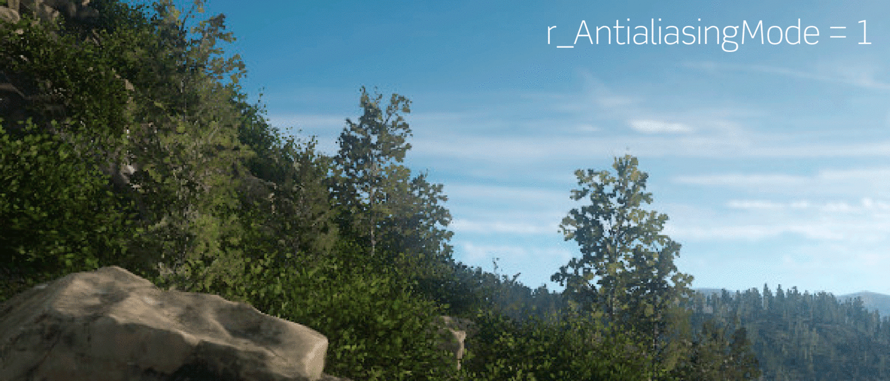

Обзор
Чистое и стабильное изображение очень важно для качественной графики. Более того, несмотря на то, что существует множество различных методов сглаживания, поиск эффективной реализации, обеспечивающей отличное качество, остается одной из самых больших проблем при рендеринге. Это еще более справедливо для приложений VR, где неровные края и ползущие пиксели могут вызвать серьезный дискомфорт у зрителя, а используемые методы рендеринга должны работать в рамках очень ограниченного бюджета производительности.

Субпиксельное морфологическое сглаживание (SMAA) и временное AntiAliasing
SMAA — это эффективный метод постобработки, который позволяет надежно обнаруживать и сглаживать края изображения. Хотя он очень хорошо удаляет неровности и лестничные артефакты на краях, он не решает проблему временного сглаживания, когда отдельные пиксели и целые края могут мерцать во время движения. Чтобы решить эти проблемы, CRYENGINE впервые применил высокоэффективные временные фильтры, которые берут информацию из предыдущих кадров, чтобы повысить стабильность субпиксельных функций, которые в противном случае ползали бы и мерцали бы очень очевидным образом.
CVar/Команда | Описание |
|---|---|
| r_AntialiasingMode 1 | Включает SMAA без временной фильтрации. |
| r_AntialiasingMode 2 | Включает SMAA с временной фильтрацией. |
| r_AntialiasingMode 3 | Включает SMAA с временной фильтрацией и дрожанием матрицы проекции для дальнейшего улучшения качества. |
Временное сглаживание суперсэмплинга (TSAA)
TSAA немного изменяет матрицу проекции в каждом кадре, чтобы со временем получить больше выборок для любого пикселя. Поскольку не требуется рендеринг дополнительных пикселей, этот метод очень эффективен и в то же время обеспечивает удивительно хорошее качество изображения — это делает его особенно подходящим для консольных приложений и приложений VR, включая PSVR. Фактически, Робинсон для PSVR поставляется с реализацией TSAA от Crytek, представленной в CRYENGINE 5.4.
Особое внимание в нашей реализации TSAA уделяется сохранению резкости изображения (важно для приложений VR), где из-за воспринимаемого размера пикселя любые визуальные артефакты очень заметны.
Хотя этот метод в целом работает очень хорошо, в некоторых случаях сбои могут привести к появлению артефактов. Одним из наиболее очевидных является случай мерцающих краев, когда алгоритм не может правильно классифицировать образцы из предыдущего кадра как действительные. Эту проблему можно в некоторой степени решить с помощью CVar, перечисленных ниже, но, к сожалению, она не всегда полностью разрешима.
CVar/Команда | Описание |
|---|---|
| r_AntialiasingMode 4 | Включает временную суперсэмплинг (без SMAA). |
| r_AntialiasingTSAAMipBias | Устанавливает смещение mimap LoD для TSAA (отрицательные значения для повышения резкости). |
| r_AntialiasingTSAASubpixelDetection | Настраивает показатель для обнаружения изменений субпикселей (выше: меньше мерцания, но больше ореолов). |
| r_AntialiasingTSAASmoothness | Регулирует плавность изображения при движении. |
Замечания по реализации
TSAA реализован как метод постобработки, аналогичный другим режимам SMAA.
Суперсэмплинг
В дополнение к эффективным методам AA на основе изображений, CRYENGINE поддерживает классическую пространственную суперсэмплинг для очень высококачественного рендеринга. Суперсэмплинг визуализирует сцену с более высоким разрешением и уменьшает изображение для получения гладких и стабильных краев. Из-за высокого внутреннего разрешения рендеринга суперсэмплинг очень ресурсоемок и поэтому подходит только для ПК высокого класса.
Квар/Команда | Описание |
|---|---|
| r_SuperSampling 0/1 | Отключает/включает суперсэмплинг. |
| r_SuperSampling 2 | Включает суперсэмплинг 2x2. |
| r_SuperSampling 3 | Включает суперсэмплинг 3x3. |
Суперсэмплинг также можно использовать в сочетании с методами AA на основе изображений для дальнейшего улучшения качества изображения.